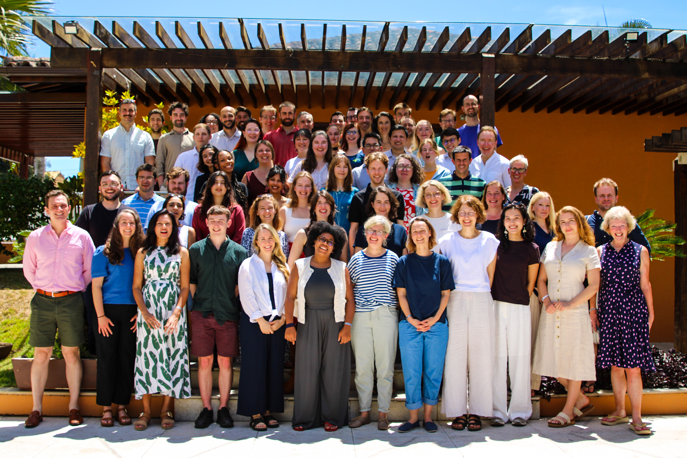
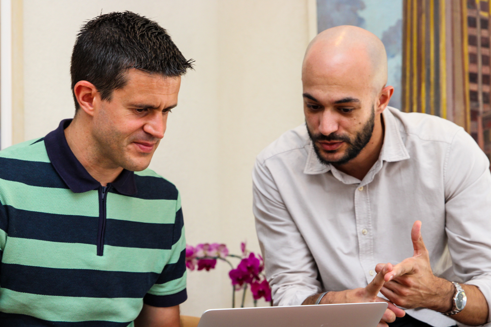
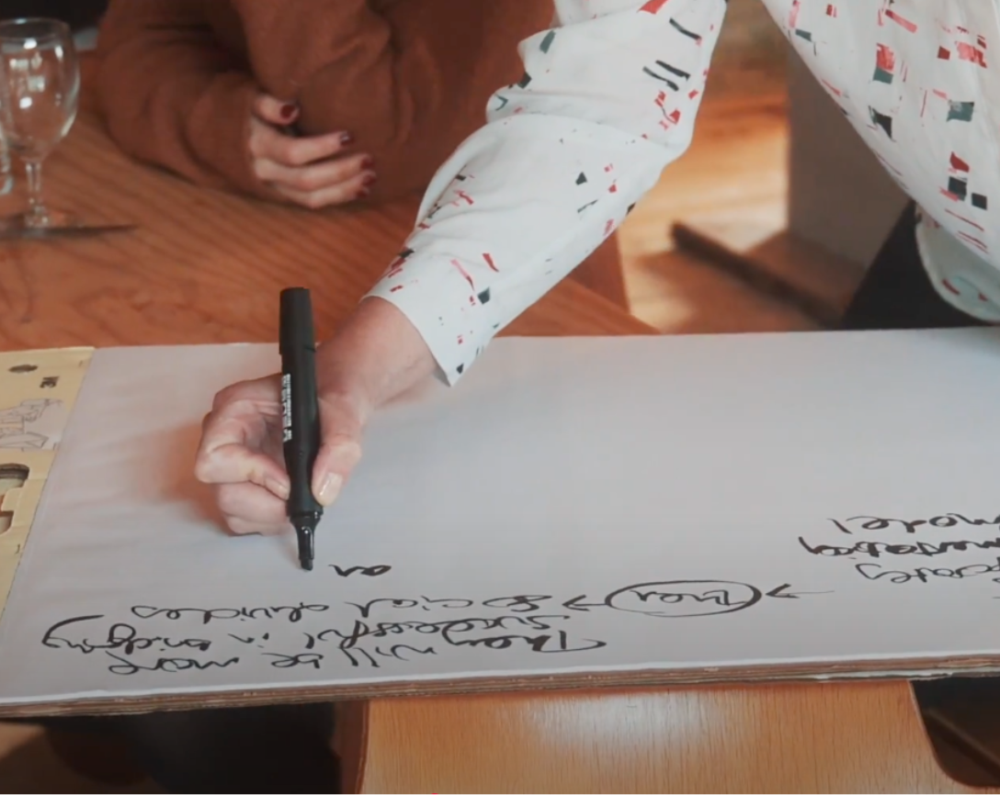
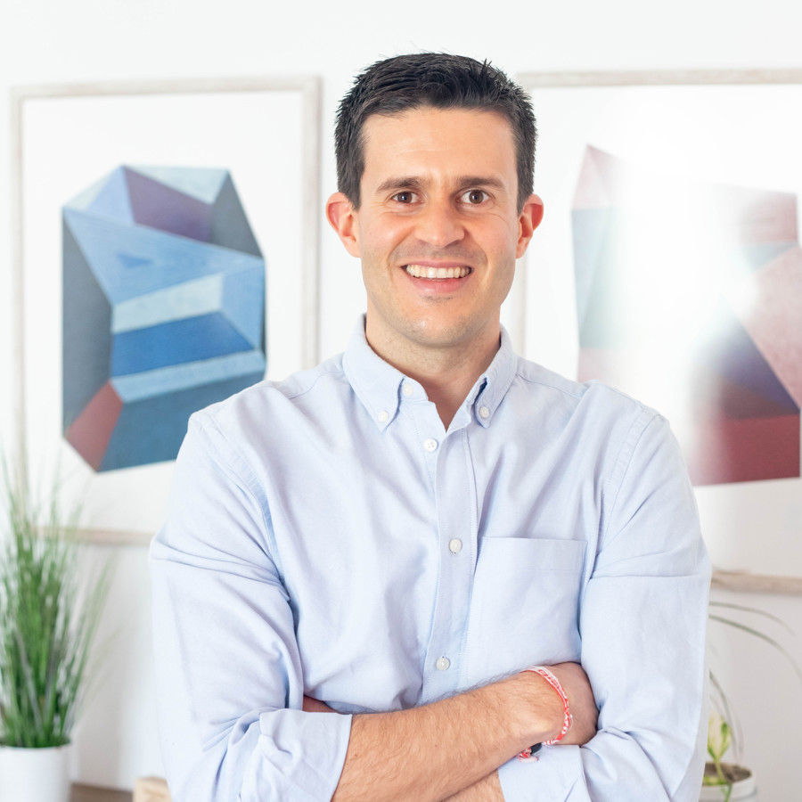
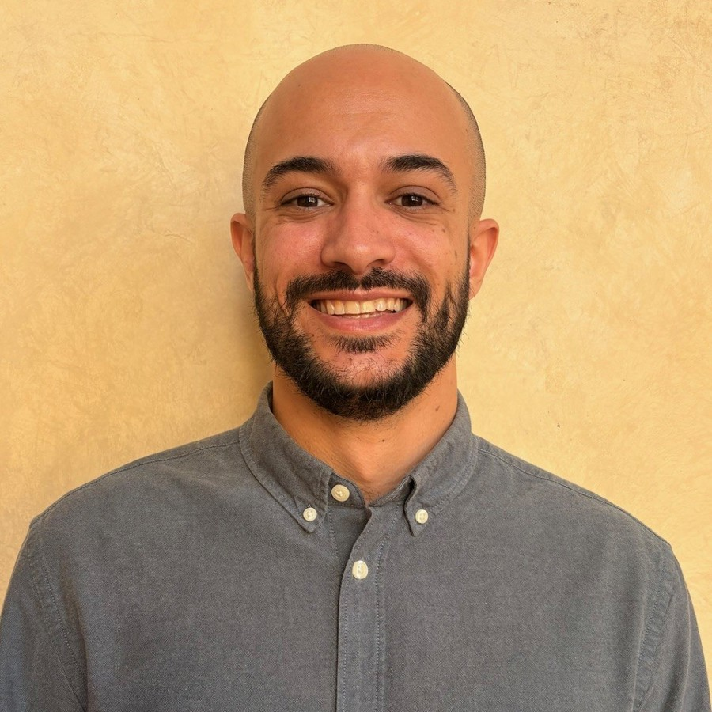

Somos una organización internacional de investigación social dedicada a entender las dinámicas que dividen y cohesionan a la sociedad.
Nacimos en 2017 tras el trágico asesinato de la diputada Jo Cox en el Reino Unido. Tomamos nuestro nombre del discurso inaugural que Jo dio en el Parlamento británico, en el que afirmó que «estamos mucho más unidos y tenemos mucho más en común que aquello que nos divide».
Desde entonces, nuestro trabajo ha tenido como objetivo comprender las fuerzas que nos separan, encontrar puntos en común y unir a las personas para abordar los grandes retos de nuestro tiempo. Actualmente, operamos en ocho países -España, Estados Unidos, Brasil, Reino Unido, Francia, Alemania, Polonia e Irlanda- y trabajamos en otros como Italia de manera puntual.


En España estamos constituidos como asociación y comenzamos nuestra labor investigadora en 2021, durante la pandemia de la COVID-19, pero no fue hasta 2024 cuando empezamos a operar de manera más permanente y con un equipo dedicado a cumplir nuestra misión de luchar contra la polarización y la fractura social.
Aspiramos, además, a convertirnos en la organización que democratice la investigación sociológica y demoscópica de calidad para la sociedad civil española y otros actores que, a menudo, carecen del tiempo y los recursos para acceder a ella.
Nuestra labor investigadora incorpora distintos métodos para identificar, medir y describir las complejas dinámicas que explican la sociedad, la cultura y la política. Somos conocidos por indagar en "el porqué" de las cosas, no solo en el "qué", así como por nuestras segmentaciones e investigaciones sobre valores y creencias profundas y su relación con la ideología.
También somos conocidos por nuestro rigor metodológico, que explica que nuestro trabajo haya aparecido en medios de comunicación de referencia en todo el mundo como The New York Times, The Atlantic, The Guardian, The Times, The Economist, O Globo, El País o El Mundo.

Combinamos técnicas cuantitativas y cualitativas para comprender la realidad social en profundidad.
Identificamos los puntos de encuentro entre los distintos grupos sociales para fortalecer la cohesión social.
Producimos evidencia útil para medios, sociedad civil y actores políticos e institucionales.
Formamos parte de una red internacional que nos permite contextualizar dinámicas nacionales y globales.
Nuestro equipo en España trabaja con una red de colaboradores y el equipo internacional de More in Common.

Luis está especializado en el lanzamiento y la dirección de iniciativas sociales y filantrópicas. Actualmente, dirige las operaciones de More in Common en España y coordina también varias de sus iniciativas europeas.
Luis comenzó a trabajar en More in Common en 2024, tras formar parte del equipo que lanzó la plataforma Change.org en España, donde acabó dirigiendo sus operaciones en Europa. En los últimos años, ha asesorado a organizaciones de cambio social de toda Europa. Es licenciado en Periodismo y Cine por la Universidad Carlos III de Madrid.

Tarek está terminando su doctorado en Ciencias Sociales y Políticas en el Instituto Universitario Europeo. Su investigación se centra en el comportamiento político, las normas políticas y las dinámicas de la extrema derecha en Europa, explorando cómo su auge se ve modulado por los lazos sociales.
También estudia la interacción entre la representación política femenina, las normas y los comportamientos, así como la integración política de los inmigrantes. Su enfoque metodológico se centra en los métodos cuantitativos y la inferencia causal.
Somos una organización internacional sin ánimo de lucro, comprometida con la promoción del bien común en las sociedades en las que trabajamos. Además, somos independientes de intereses partidistas o políticos y conocidos por la objetividad y el rigor metodológico de nuestros análisis.
En España tenemos dos vías de financiación: